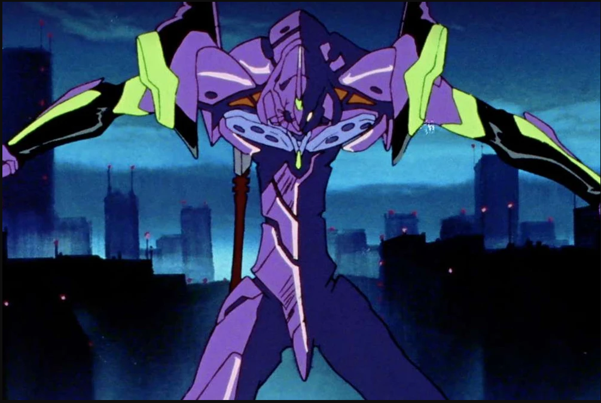
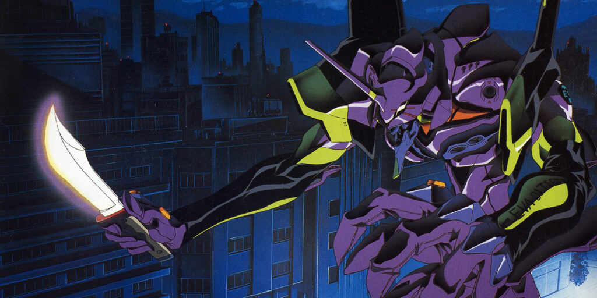

Created in the Third Annex of Gehirn's Artificial Evolution Laboratory in Hakone from 2003 to 2004 and deemed a functional Evangelion unit in 2014, Unit-01 is piloted by Shinji Ikari (with Rei Ayanami or a Rei dummy plug as backup pilots) and has the best battle record of all the Evangelions.
Evangelion Unit-01 (エヴァンゲリオン初号機, Evangerion Shogōki?) is the first non-prototype Evangelion unit, and is referred to as the "EVA-01 TEST TYPE". It houses the soul of Shinji's mother, Yui Ikari. It is mainly piloted by Shinji Ikari. Unit-01 serves as the flagship model for the series.